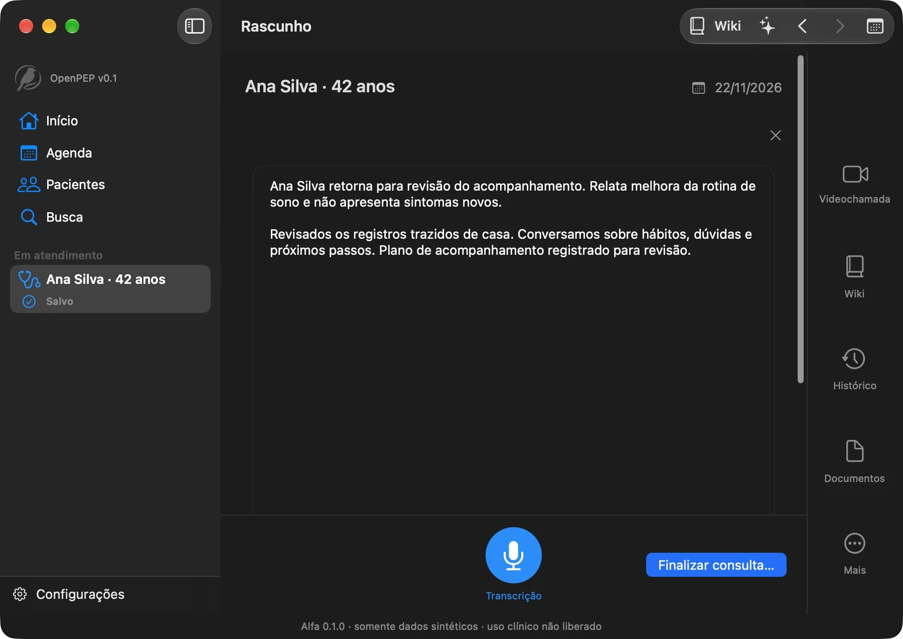
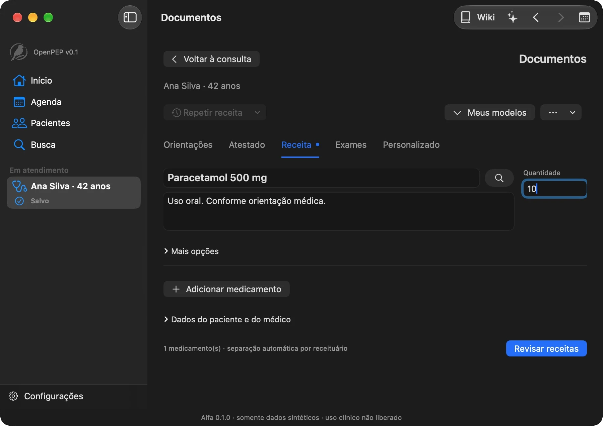

Personalize a anamnese exatamente do seu jeito.
Organize o registro para o seu raciocínio e sua forma de atender.
ABERTO POR NATUREZA
Boas tecnologias desaparecem na paisagem.
Uma iniciativa 100% open-source e brasileira.
Alfa experimental · uso clínico ainda não liberado
CONHEÇA O OPENPEP
Um prontuário ambulatorial brasileiro, 100% open-source. Veja como voz, inteligência e autonomia se encontram.
Uma consulta com Ana Silva, do primeiro registro aos documentos.
Baixar o filmeUm médico chega ao consultório e inicia uma consulta no OpenPEP. O filme apresenta transcrição local ou na nuvem, personalização da anamnese, revisão dos registros, receitas e assinatura digital, integração com o SNCR e arquivos locais. Convida profissionais de diferentes áreas da saúde a colaborar. Ao final, um bem-te-vi se transforma no símbolo do projeto. A demonstração reúne telas da alfa e uma visão de evolução da interface.
DA CONVERSA AO PRONTUÁRIO
Converse, acompanhe a transcrição e revise na própria consulta. Escolha um modelo local ou na nuvem, conforme sua configuração.

INTELIGÊNCIA INTEGRADA
Do sistema de dados à interface, um design pensado na era dos agentes de IA.
O contexto acompanha você. Transforme a transcrição em uma proposta de resumo, consulte a história do paciente e confira as fontes. Você revisa antes de aceitar.
42 anos · Resumo de saúde
A IA reuniu os registros. Você confere cada informação e decide o que incorporar.
Hipertensão arterial em acompanhamento.
Fonte: consulta de 12 nov. 2026Losartana 50 mg · 1 vez ao dia
Fonte: receita de 12 nov. 2026Nenhuma alergia relatada na última consulta.
Fonte: registro de 12 nov. 2026Organize o registro para o seu raciocínio e sua forma de atender.
Agenda, histórico, consulta e documentos fazem parte do mesmo fluxo.
Confira o conteúdo e suas referências antes de incorporar ao prontuário.
AUTONOMIA DESDE A ORIGEM
Os registros vivem em uma pasta escolhida por você. Arquivos legíveis e formatos abertos tornam muito mais simples exportar sua história e importar registros de outros sistemas.
Guarde qualquer tipo de arquivo junto ao prontuário: PDFs de resultados de exames, textos, documentos, imagens e mais. Abra, copie e organize tudo diretamente no computador. A adaptação de registros de outros sistemas depende do formato de origem e da sua revisão.
Markdown · YAML · PDF · formatos documentados
Como a pasta pode ser lida por qualquer agente de IA, sem acesso a um banco de dados, esse modelo também levanta questões de segurança que precisam de discussão. Conheça a arquitetura e o roadmap.
FONTES ORIGINAIS
Exames, imagens e transcrições preservados como fontes para consulta.
REGISTRO PROFISSIONAL
Rascunhos, notas finais e adendos em arquivos legíveis. Correções são registradas por adendo.
CONTEXTO E REFERÊNCIAS
Uma visão organizada da história, com propostas que passam pela sua revisão.

DA CONSULTA AOS DOCUMENTOS
Emita receitas e outros documentos 100% localmente, com certificado digital local.
Organize as numerações de receitas controladas. A homologação é o padrão; produção depende de escolha explícita e configuração.
A alfa ainda não está liberada para emissão clínica. Certificados, serviços externos e integrações têm requisitos próprios.
100% OPEN-SOURCE. FEITO NO BRASIL.
Um projeto aberto para evoluir com diferentes especialidades e profissões da saúde. Traga sua experiência, adapte os fluxos e ajude a construir o próximo capítulo.
Estamos preparando o repositório para acesso público. A colaboração começa com a abertura do código.
ALFA EXPERIMENTAL
A primeira alfa está em preparação para distribuição como código-fonte. Ainda não há download público nem liberação para uso clínico.
Os testes devem usar somente dados sintéticos. Não utilize a alfa para atendimento ou guarda de dados reais de pacientes.
A alfa foi preparada para Mac com Apple Silicon e macOS 26 ou posterior. A compilação utiliza Xcode 27 e Swift 6.4. Windows e instalador não fazem parte desta distribuição inicial.
Os arquivos ficam localmente. Serviços de IA externos são opcionais e exigem configuração e autorização. Recursos Apple dependem da disponibilidade dos modelos no Mac; SNCR e certificados em nuvem também dependem de internet.
Essa é a proposta do código aberto: permitir que o projeto seja estudado e adaptado a diferentes formas de cuidar. Cada adaptação e cada novo uso precisam ser avaliados e validados.
O núcleo usa AGPL-3.0-or-later. Schemas e ferramentas usam Apache-2.0; documentação, CC BY 4.0. Catálogos, fontes e marca têm avisos próprios no repositório.